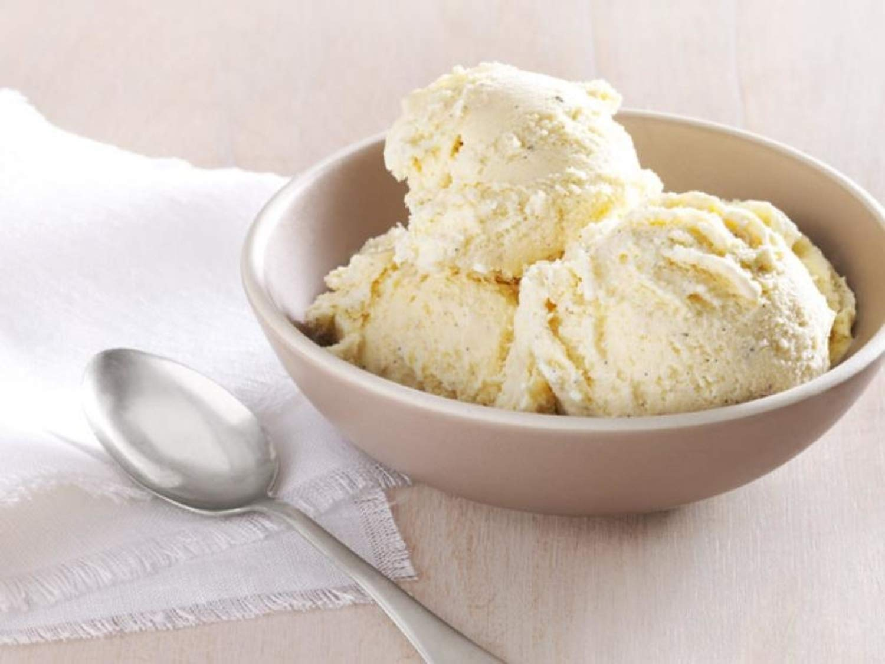
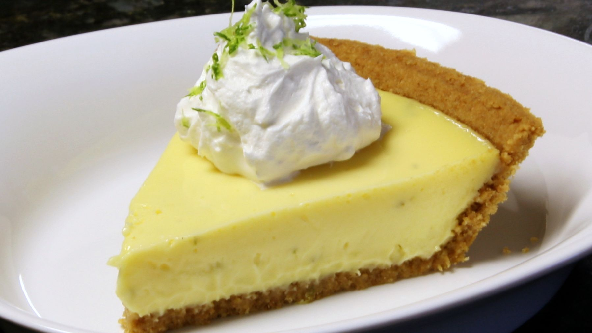
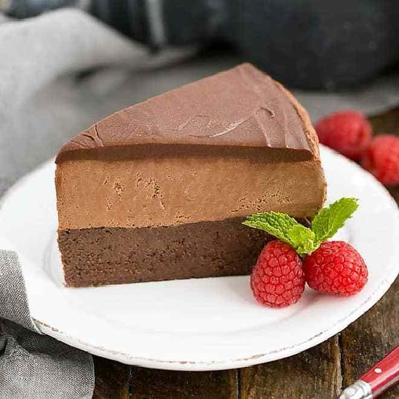
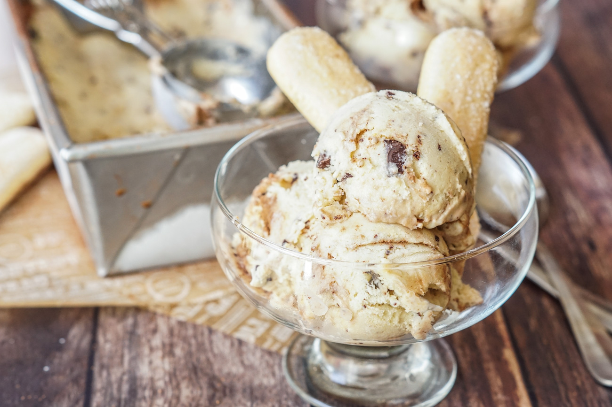
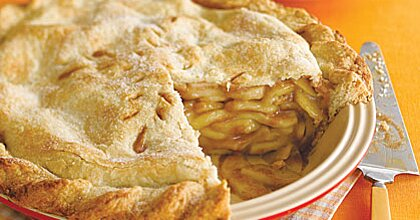

Desserts
In this zone, you're welcomed with some chill-out desserts, a delightfully
rich serving that indaves your mouth with sweetness and chilliness.
"If there is one consolotaion to feeling slightly low, then it must be the excuse to indulge in an irresistable sweetness.
Luscious ice cream, mysterious chocolate mousse or gooey chilled pies are all here along with energizing fruit creations."
1. Classic Vanilla Ice Cream

Nothing beats the comforting simplicity of vanilla ice
cream for evoking childhood memories. A flavour that suits
the taste of every age, and a flavour to improve your day! Vanilla
pods are well worth buying for the superb flavour impart.
2. Key Lime Pie

This splendid tart with its rich lime filling is one of Amreica's favourite.
As the same suggests, it originated in the Florida Keys. Forget about
being blue, think of sun and enjoy!
3. Chilled Chocolate Mousse

Heady, aromatic espresso coffee adds a distinctive
flavour to this smooth, rich mousse. Serve it
in stylish chocolate cups to bring a
sense of occasion to the desert course.
4. Iced Tiramisu

The title of this favourite Italian dessert means "pick-me-up",
a dessert that brings the sense of calmness and
happiness. A perfect way to give youself a rest, and
treat your stomach wisely!
5. Deep-dish Apple Pie

This pie like a mother used to make, with
melt-in-the-mouth shortcrust pastry, Inside, sugar,
spices, and flour create a delicious thick and
syrupy sauce with the apple juices.